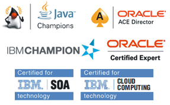

Digital Transformation
- Full consulting and mentoring for digital transformation projects
- Digital transformation Strategy
- Identification of digital products/services
- Planning and architecture for digital products/services
- Rapid development and implementation (complete solution) with extremely fast time-to-market
- Integration with back-end systems
- Inception
Certifications

Transition to the Cloud
- Consulting and mentoring with the transition to the cloud
- Skilled for SAP Hana Cloud Platform
- Skilled and certified for Microsoft Azure
- Skilled and certified for IBM BlueMix
- Skilled and certified for Oracle Cloud
- Skilled for Amazon AWS
Bimodal IT
- Consulting and mentoring with Bimodal IT approach
- Reference procedures and best practices for establishing Bimodal IT operations
DevOps
- Continuous builds
- Continuous integration
- Continuous delivery
- Continuous testing
- Installation and configuration of DevOps environments
Enterprise Solutions
- Extensive skills and know-how in enterprise IT and application development
- Highly skilled team for rapid agile application design and development
- Migration from Java EE and .NET application servers to the cloud
- Refactoring of legacy applications
- DevOps based agile design and development
- Full customer satisfaction – we help our clients from the idea through specifications and design to modern, responsive solutions
-
Specialized on (with extensive track record):
• Java EE
• BPM/SOA and business process automation
• Integration and MDM (including IoT integration)
• API Management and API Economy
• Transition to the cloud
- Focus on commercial (IBM, Oracle) and open-source (JBoss) stacks.
BPM/SOA
- Expert team for BPM and SOA
- Modeling executable business processes
- Developing process applications
- Integration process applications with back-end services
- Highly-skilled and certified for IBM BPM, Oracle SOA and BPM Suite and JBoss jBPM with extensive track record
HTML5 responsive web and mobile UX development
- First-class user experience
- Highly-skilled for HTML5 client side development
- Highly-skilled for mobile development: iOS and Android
- AngularJS expertise
- React expertise
- Native and hybrid mobile development
Java EE architecture and development
- Extensive, in-depth Java and Java EE expertise
- Long year experience with most complex Java EE projects
- Certified for IBM WebSphere and Oracle WebLogic
- Fully skilled for JBoss WildFly
- Migration of Java EE application to the cloud